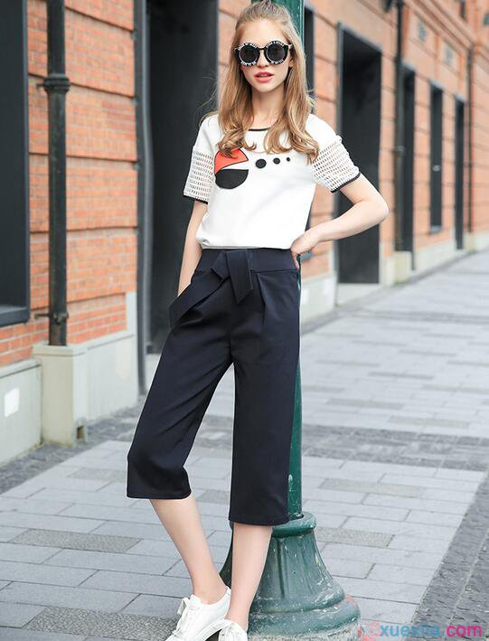

这样穿能上一个档次哦
编辑：娴娴2015-12-11点赞0次
这样穿能上一个档次哦
编辑：娴娴2015-12-11点赞0次
美装网，你的时尚，你定义。
To get a square image, just put the size you want.
1、崇拜着另一个“自己” 熊黛林心中的女神居然是王菲，T台上明艳动人，银幕上她是张弛有度，偶像剧中她光彩照人，综艺节目中化身完美女神一起寻找“女神的新衣”，她永远不止一面，她永远要求自己做到面面闪耀动人，她就是今天的多面女神榜样：熊黛林！
2、崇拜着另一个“自己” 熊黛林心中的女神居然是王菲，T台上明艳动人，银幕上她是张弛有度，偶像剧中她光彩照人，综艺节目中化身完美女神一起寻找“女神的新衣”，她永远不止一面，她永远要求自己做到面面闪耀动人，她就是今天的多面女神榜样：熊黛林！
美装网，你的时尚，你定义。
To get a square image, just put the size you want.
1、崇拜着另一个“自己” 熊黛林心中的女神居然是王菲，T台上明艳动人，银幕上她是张弛有度，偶像剧中她光彩照人，综艺节目中化身完美女神一起寻找“女神的新衣”，她永远不止一面，她永远要求自己做到面面闪耀动人，她就是今天的多面女神榜样：熊黛林！
2、崇拜着另一个“自己” 熊黛林心中的女神居然是王菲，T台上明艳动人，银幕上她是张弛有度，偶像剧中她光彩照人，综艺节目中化身完美女神一起寻找“女神的新衣”，她永远不止一面，她永远要求自己做到面面闪耀动人，她就是今天的多面女神榜样：熊黛林！
喇叭裤搭配什么上衣？4款潮搭让你美上天，近年来，随着复古风的兴起，喇叭裤逐渐的回归到人们的视野中，但是喇叭裤总会给人一些土气的感觉，那么该如何摆脱掉喇叭裤的那一丝土气呢？喇叭裤搭配什么上衣？4款潮搭让你美上天，近年来，随着复古风的兴起，喇叭裤逐渐的回归到人们的视野中，但是喇叭裤总会给人一些土气的感觉，那么该如何喇叭裤搭配什么上衣？4款潮搭让你美上天，近年来，随着复古风的兴起，喇叭裤逐渐的回归到人们的视野中，但是喇叭裤总会给人一些土气的感觉，那么该如何喇叭裤搭配什么上衣？4款潮搭让你美上天，近年来，随着复古风的兴起，喇叭裤逐渐的回归到人们的视野中，但是喇叭裤总会给人一些土气的感觉，那么该如何
短夹克特殊的版型搭配喇叭裤真的是再好不过，短夹克使腰线无形之中提高，喇叭裤收紧的线条和微张的裤腿使人看起来更加显瘦显高。喇叭裤搭配什么上衣？4款潮搭让你美上天，近年来，随着复古风的兴起，喇叭裤逐渐的回归到人们的视野中，但是喇叭裤总会给人一些土气的感觉，那么该如何喇叭裤搭配什么上衣？4款潮搭让你美上天，近年来，随着复古风的兴起，喇叭裤逐渐的回归到人们的视野中，但是喇叭裤总会给人一些土气的感觉，那么该如何
皮草和裤装的搭配十分时髦，或许你第一个想到的是搭配紧身裤但是搭配喇叭裤却会有不一样的效果，不仅中和豪气，上半部分贴紧把腿部线条完美勾勒而微张的裤腿可以把你的高跟鞋完美掩饰使双腿看起来长了五公分。喇叭裤搭配什么上衣？4款潮搭让你美上天，近年来，随着复古风的兴起，喇叭裤逐渐的回归到人们的视野中，但是喇叭裤总会给人一些土气的感觉，那么该如何喇叭裤搭配什么上衣？4款潮搭让你美上天，近年来，随着复古风的兴起，喇叭裤逐渐的回归到人们的视野中，但是喇叭裤总会给人一些土气的感觉，那么该如何
火了一整季的毛衣当然不能忘记，毛衣想穿出复古的感觉推荐选择一条牛仔的喇叭裤很轻松就能打造复古摩登时髦女郎。喇叭裤搭配什么上衣？4款潮搭让你美上天，近年来，随着复古风的兴起，喇叭裤逐渐的回归到人们的视野中，但是喇叭裤总会给人一些土气的感觉，那么该如何喇叭裤搭配什么上衣？4款潮搭让你美上天，近年来，随着复古风的兴起，喇叭裤逐渐的回归到人们的视野中，但是喇叭裤总会给人一些土气的感觉，那么该如何
很多时候你喜欢的的衣服并不一定适合你，很多衣服别人穿着好看，你穿上未必就帅。比如同样是很正式的西装，娃娃脸男生穿上就不行，像是小孩穿了大人的衣服；前卫酷酷型就更不行了，穿了像乡镇干部；但如果是标准古典型帅哥穿上，就很养眼。再比如一件简单的打底衫，自然型的帅哥能把它穿得很有型，但是古典型和浪漫型男士就不用想了，穿上去跟内衣差不多。所以先要找对适合你的款，不要看着别人穿着帅气就盲目跟风
要知道自己适合的颜色男士首先是冷色调最合适，因为冷色调凸显出男士的沉稳，而且男士肤色整体比女性偏暗，所以穿冷色调的衣服无疑是合适的。但也不能一概而论，很多男士皮肤白净，从事的工作很随性，无需刻板地着装，那么冷暖色都可以考虑，只是在纯度上要有所不同，还要具体参考发色、眼神来搭配。 不同的工作类型也有不同的色彩搭配法。沉稳型的工作请尽量选择同色系搭配，时尚型工作可以进行跳跃色搭配。
前期准备结束后开始培养审美多看一些男装搭配类型的网站、相册等，看久了之后你自然就会知道这个颜色应该和哪种颜色搭配，什么衣服应该搭配什么鞋子。审美不是天生的，而是后天培养出来的。
收集适合自己的款型图片举例说明：古典型男生适合穿西装三件套，就可以在平时收集一些适合的西装搭配。下次在买衣服前，翻看一下自己收集的图片，比着图片去搭配就不容易出错。但是还是要以适合自己为前提
反对任何反人类的穿法如：夏天不怕热竖起领子，冬天不怕冷挽起裤腿。相信我，把POLO衫的领子竖起来一点都不会增加你的帅气，反而会让你成为女生私下里取笑的对象。